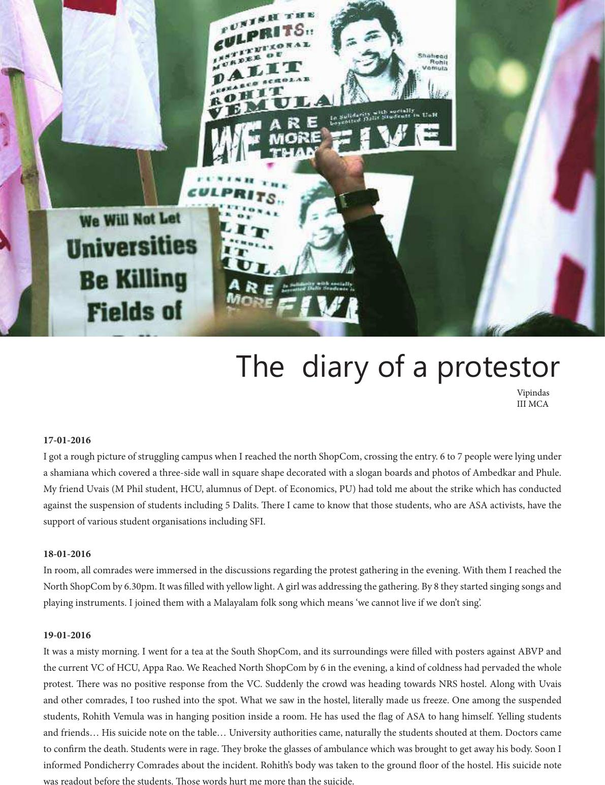

17-01-2016
I got a rough picture of struggling campus when I reached the north ShopCom, crossing the entry. 6 to 7 people were lying under
a shamiana which covered a three-side wall in square shape decorated with a slogan boards and photos of Ambedkar and Phule.
My friend Uvais (M Phil student, HCU, alumnus of Dept. of Economics, PU) had told me about the strike which has conducted
against the suspension of students including 5 Dalits. ere I came to know that those students, who are ASA activists, have the
support of various student organisations including SFI.
18-01-2016
In room, all comrades were immersed in the discussions regarding the protest gathering in the evening. With them I reached the
North ShopCom by 6.30pm. It was lled with yellow light. A girl was addressing the gathering. By 8 they started singing songs and
playing instruments. I joined them with a Malayalam folk song which means ‘we cannot live if we don’t sing’.
19-01-2016
It was a misty morning. I went for a tea at the South ShopCom, and its surroundings were lled with posters against ABVP and
the current VC of HCU, Appa Rao. We Reached North ShopCom by 6 in the evening, a kind of coldness had pervaded the whole
protest. ere was no positive response from the VC. Suddenly the crowd was heading towards NRS hostel. Along with Uvais
and other comrades, I too rushed into the spot. What we saw in the hostel, literally made us freeze. One among the suspended
students, Rohith Vemula was in hanging position inside a room. He has used the ag of ASA to hang himself. Yelling students
and friends… His suicide note on the table… University authorities came, naturally the students shouted at them. Doctors came
to conrm the death. Students were in rage. ey broke the glasses of ambulance which was brought to get away his body. Soon I
informed Pondicherry Comrades about the incident. Rohith’s body was taken to the ground oor of the hostel. His suicide note
was readout before the students. ose words hurt me more than the suicide.
The diary of a protestor
Vipindas
III MCA